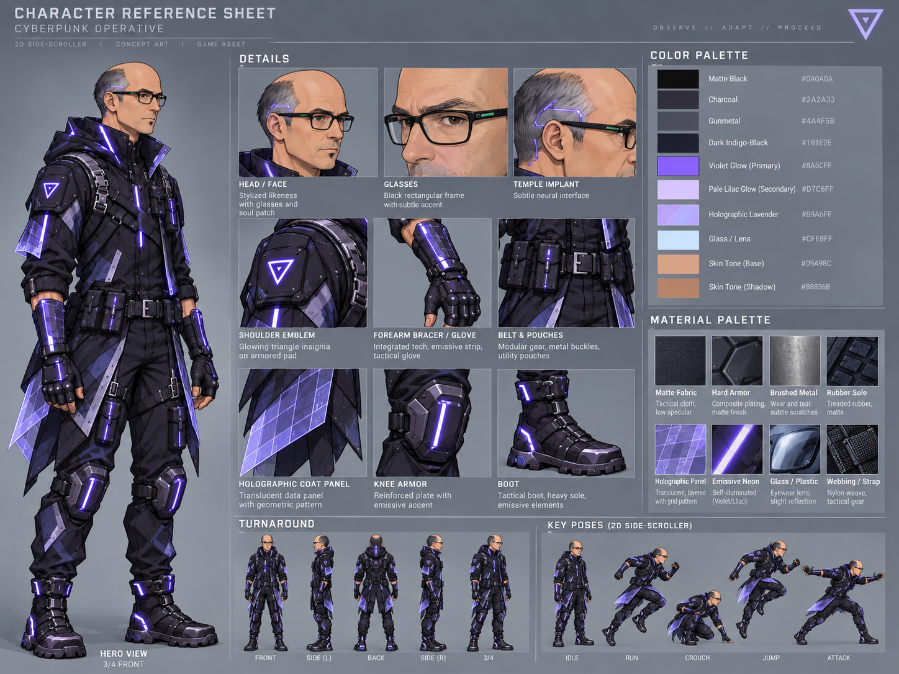
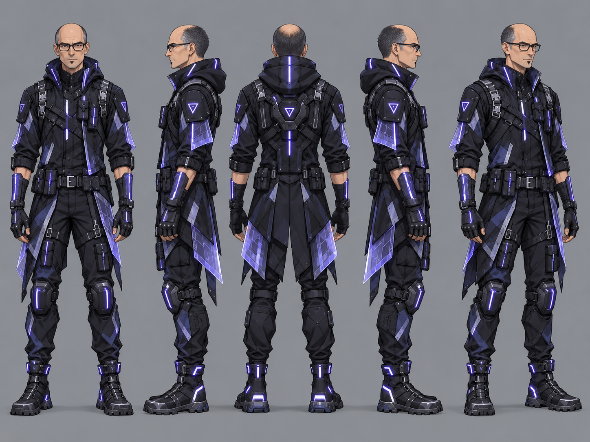
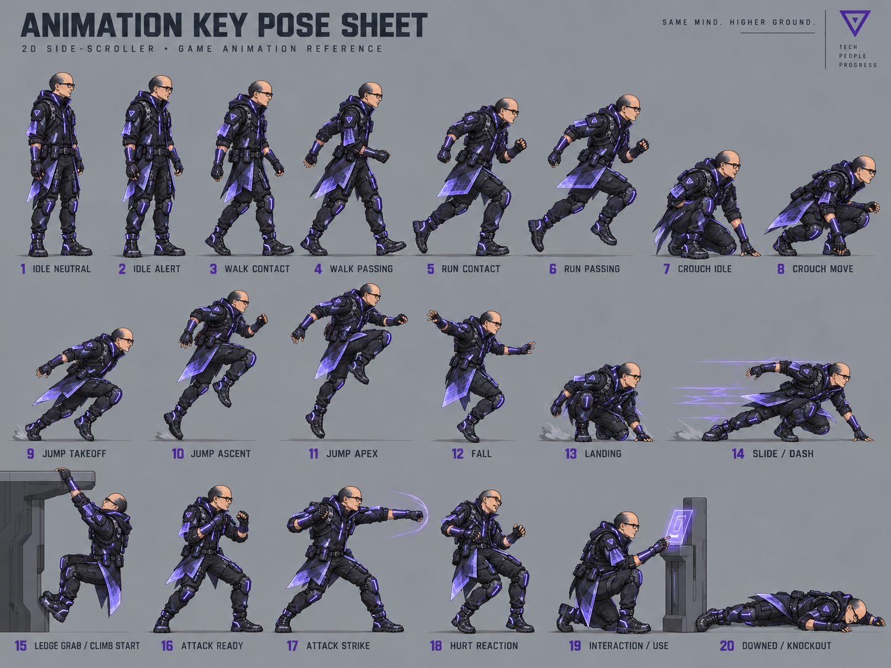

Begleit-Website zum Repository
Vom leeren Windows-PC bis zur ersten Iteration deines 2D-Spiels
Diese Anleitung führt dich unter Windows mit WSL und Godot 4.7.2 Schritt für Schritt bis zur 1. Iteration: der Art-Bibel mit Charakter-Referenzen, Farbpalette und Welt-Ebenen. Danach baut ein KI-Agent daraus das spielbare Cyberpunk-Jump-’n-’Run Signal Infestation.

dist/level1/captures/combat_entrance.png1 · Überblick: Was passiert hier?
Drei Zutaten arbeiten zusammen: du (Idee + Geschmack), ein Chatmodell (Bilder) und ein Coding-Agent (Umsetzung im Code).
Du lieferst
- Die Spielidee als kurzen Brief (level1.md)
- Referenzbilder aus einem Bildmodell
- Spieltests: spielen, bewerten, nachschärfen
Der Agent erledigt
- Ordner, Szenen, Skripte und Gegner anlegen
- Prüfläufe (check-project.sh) und Fehler beheben
- Übergabe in AGENT_HANDOFF.md pflegen
Lege das Repository unter WSL an, z. B. ~/projects/agent-game –
nicht unter /mnt/c/…. Dort sind viele kleine
Dateioperationen deutlich langsamer (siehe README_SETUP.md).
2 · Voraussetzungen im Überblick
Alles, was du brauchst – Details folgen in den nächsten Schritten.
| Was | Wofür | Version |
|---|---|---|
| Windows + WSL2 | Entwicklungsumgebung (Ubuntu empfohlen) | Windows 10/11 |
| Godot (Linux-Binary) | Engine, Editor, Export | 4.7.2 |
| Node.js + npm | OpenCode installieren | aktuell LTS |
| OpenCode | KI-Coding-Agent | per npm |
| OpenRouter-Key | Modellzugang für den Agenten | .env, nie committen |
3 · WSL einrichten und Repo ablegen
WSL installieren (Windows-PowerShell als Administrator)
wsl --install
wsl --set-default-version 2Danach Ubuntu aus dem Microsoft Store installieren, starten und ein Benutzerkonto anlegen. Details: README_SETUP.md.
Projektordner im Linux-Dateisystem anlegen
mkdir -p ~/projects/agent-game
cd ~/projects/agent-gameRepository hierher klonen bzw. entpacken und ausführbar machen:
chmod +x start-opencode.sh tools/*.shNode.js, npm und OpenCode prüfen
node --version
npm --version
npm install -g opencode-ai4 · Godot 4.7.2 in WSL installieren
Die Prüf- und Startskripte erwarten die Linux-Binary.
Eine Windows-.exe läuft zwar über WSL-Interop, ist aber langsamer.
Offizielle Linux-Binary nach ~/.local/bin installieren
mkdir -p ~/.local/bin
curl -L -o /tmp/godot.zip \
https://github.com/godotengine/godot/releases/download/4.7.2-stable/Godot_v4.7.2-stable_linux.x86_64.zip
unzip -o /tmp/godot.zip -d /tmp/godot
install -m 755 /tmp/godot/Godot_v4.7.2-stable_linux.x86_64 ~/.local/bin/godot
godot --versionErwartet: 4.7.2.stable.official…. ~/.local/bin liegt
in WSL standardmäßig im PATH, sonst in ~/.bashrc ergänzen:
export PATH="$HOME/.local/bin:$PATH"Liegt Godot woanders (oder nutzt du die Windows-Binary), trage den absoluten
Pfad als GODOT_BIN in .env ein – für die Windows-Binary
die _console.exe verwenden, sonst fehlt die Terminal-Ausgabe.
tools/godot.sh sucht in der Reihenfolge GODOT_BIN,
godot, godot4.
5 · OpenCode starten (API-Key + Sicherheit)
OpenRouter-Key holen und in .env ablegen
cp .env.example .envDann in .env eintragen (Vorlage: .env.example):
OPENROUTER_API_KEY=sk-or-v1-...
GODOT_BIN=/pfad/zu/godot # nur falls nötig.env ist per .gitignore ausgeschlossen und für
OpenCode gesperrt. Modellwahl in OpenCode mit /models
(Standard: openrouter/deepseek/deepseek-v4.1-flash).
Starten und ersten Auftrag einfügen
./start-opencode.shDer Starter exportiert den Key in den Prozess (/connect ist nicht
nötig). Danach den Text aus ERSTER_AUFTRAG.md
in OpenCode einfügen – der Agent liest AGENTS.md,
GAME_SPEC.md und AGENT_HANDOFF.md
und baut den ersten Meilenstein selbstständig.
6 · Projekt prüfen (headless)
Jede Änderung wird maschinell geprüft – auch deine ersten Schritte.
./tools/check-project.shDer Test öffnet Godot headless, importiert das Projekt und startet die
Hauptszene kurz. Nach Code- oder Szenenänderungen zusätzlich den Skill
godot-pruefen laden lassen.
7 · Spielidee festhalten: Brief + Spec
Level-Brief schreiben
Ort, begehbare Elemente, Licht, Tiefe, Ausschlüsse – kein fertiges Bild. Vorlage und Beispiel: level1.md (Lower Transit Sector: verlassene Magnetbahn, Wartungsstege, Nebel-Abgrund, violette Diagnoselichter).
Spielregeln festhalten
Was muss die erste spielbare Version können? Verbindlich steht das in GAME_SPEC.md: WASD-Steuerung, Sammelobjekte, Punktestand, Gefahren, Game Over, Neustart – erst mal mit Platzhaltergrafik.
8 · 1. Iteration: die Art-Bibel bauen
Ziel: eine verbindliche visuelle Wahrheit, bevor eine einzige Spielgrafik entsteht. Anleitung des Agenten: 1st_interation.md, Umsetzung: 1st_iter/README.md. Merksatz aus dem Brief:
Referenzbilder werden nie direkt als Sprites verwendet – sie sind die Vorlage, die jeder Agent und jedes Bildmodell bekommt.
8.1 · Unverrückbare Regeln: ART_DIRECTION.md
Eine Datei mit allem, was sich nie ändern darf – z. B. Gesichtsform, Brille, Mantel-Silhouette, Violett-Akzente, strikt seitliche 2D-Kamera ohne Perspektive, dunkle Welt mit Nebel, Regen und Dampf. ART_DIRECTION.md lesen. Später genügt der Satz an den Agenten: „Read docs/art/ART_DIRECTION.md before creating or modifying any visual asset.“
8.2 · Charakter-Bibel ansehen
Fünf Referenzbilder liegen in 1st_iter/docs/art/character_bible/. Die Master-Referenz definiert Identität, Details und Palette:

{kind=link}

{kind=link}

{kind=link}
{kind=link}
{kind=link}
8.3 · Palette festschreiben
Fast-schwarz und Anthrazit dominieren, Violett ist der Tech-Akzent, Cyan nur sparsam, warmes Licht ist selten und damit wichtig. Ausgeschrieben in player_palette.md.
8.4 · Welt in Schichten denken (Parallax)
Kein einzelnes Hintergrundbild, sondern sechs Ebenen mit Faktoren – der zentrale Prompt steht in MASTER_ENVIRONMENT_PROMPT.md (Englisch, stabiler für Bildmodelle), die Ebenen-Tabelle in environment_bible/README.md:
| Ebene | Faktor bei Kamerafahrt rechts |
|---|---|
| Sky / Fog | 0.05x |
| Far city skyline | 0.15x |
| Mid buildings | 0.35x |
| Near buildings | 0.60x |
| Gameplay / Kollision | 1.00x |
| Foreground FX | 1.10x |
… 1st_iter/docs/art/ Referenz, Palette und Ebenen-Plan enthält,
die Produktionsordner unter 1st_iter/assets/ und src/
angelegt sind und 1st_iter/AGENT_HANDOFF.md den Stand beschreibt.
Erst dann kommt Iteration 2 (spielbar) und 3 (Gegner, Boss, Export).
Bilder aus dem fertigen Spiel
So sieht Iteration 3 aus – automatisch erzeugte Screenshots aus
dist/level1/captures/. Eigene Screenshots legst du
einfach dort ab und verlinkst sie hier als <figure> wie unten.


Ausblick: Iteration 2, 3 und Export
2. Iteration – spielbar
Gameplay-Brief (GAMEPLAY.md) und Charakter-Brief
(CHARACTER.md): Laufen, Springen, Kamera,
Checkpoints. Start: dist/level1/project.godot importieren, F5.
3. Iteration – Kampf & Export
Gegner-Design (ENEMIES.md), Schießen, Boss,
Punkte. Windows-Build: ./tools/export-windows.sh level1 erzeugt
exe + pck (Skript: export-windows.sh;
Templates einmalig via Editor → Manage Export Templates installieren).
Alle Dateien im Überblick
Die Website läuft aus dem Repository – alle Links zeigen direkt auf die echten Dateien.
- README.md – Startseite des Repos
- README_SETUP.md – WSL-Setup ausführlich
- GAME_SPEC.md – Spielregeln
- AGENTS.md – Anweisung für den Agenten
- AGENT_HANDOFF.md – aktueller Stand
- ERSTER_AUFTRAG.md – Auftrag für OpenCode
- 1st_interation.md – Art-Brief des Mentors
- level1.md – Level-Brief
- 1st_iter/README.md – Iteration 1
- ART_DIRECTION.md – visuelle Regeln
- character_bible/README.md – Bildindex
- player_palette.md – Palette
- environment_bible/README.md – Ebenen-Plan
- MASTER_ENVIRONMENT_PROMPT.md – Welt-Prompt
- docs/ASSETS.md – Assets mit KI erstellen
- docs/PUBLISH.md – GitHub-Checkliste
- 2nd_iter/README.md – Iteration 2
- 3rd_iter/README.md – Iteration 3
- dist/level1/README.md – das fertige Spiel
- tools/export-windows.sh – Windows-Export
- tools/check-project.sh – Prüflauf
- tools/godot.sh – Godot-Wrapper
- start-opencode.sh – OpenCode-Starter
- .env.example – Vorlage für API-Key
Hilfe bei Fehlern
godot: command not found
Binary liegt nicht im PATH. Entweder nach ~/.local/bin installieren
(Schritt 4) oder in .env setzen: GODOT_BIN=/pfad/zu/godot.
Für die Windows-Binary die _console.exe nehmen.
Export scheitert: Templates fehlen
Im Editor unter Editor → Manage Export Templates die
Windows-Templates installieren. Achtung WSL-Falle: Templates aus einem
Windows-nativen Godot landen unter %APPDATA%/Godot/… und sind für
WSL-Godot unsichtbar – tools/export-windows.sh übernimmt sie
automatisch nach ~/.local/share/godot/export_templates/.
Alles langsam / Dateien verschwinden
Repo liegt vermutlich unter /mnt/c/… – ins Linux-Dateisystem
umziehen (~/projects/…), siehe Schritt 1.
Deine Checkliste bis Iteration 1
Wird nur in deinem Browser gespeichert – nichts verlässt deinen Rechner.